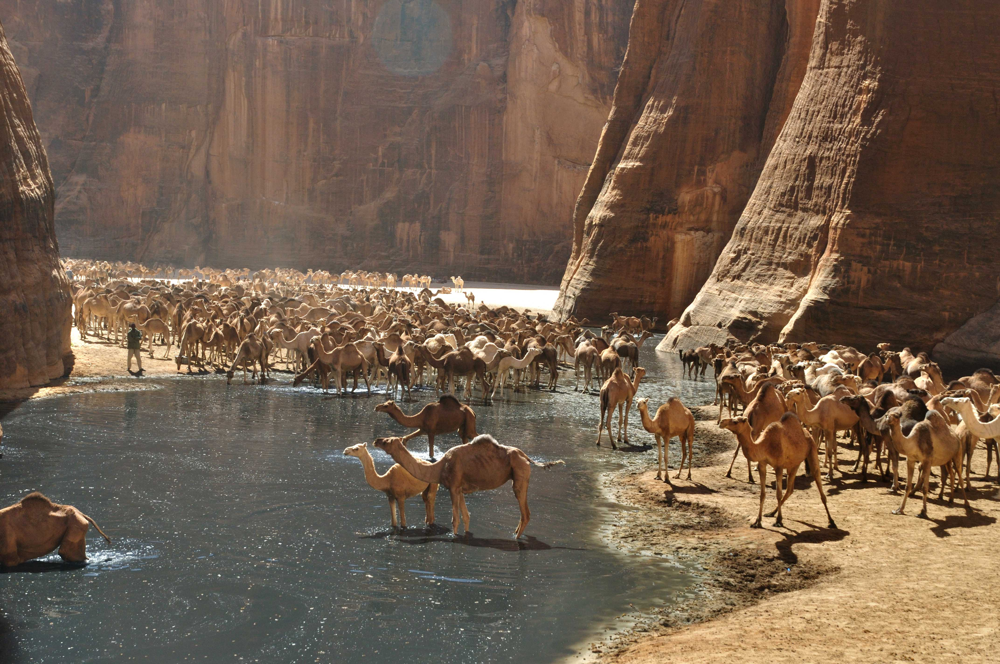
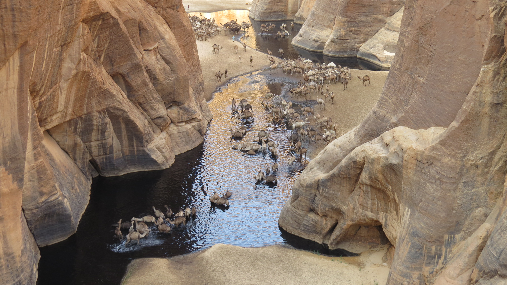

În mijlocului desertului Sahara exista un loc uimitor. O mica oaza, pe care daca ai vedea-o in timp ce mergi prin soarele desertului ai crede ca este un miraj.
Se numeste Guelta d’Archei si este o mica oaza, cu un petic de apa si mici copacei. Dar ce se intampla aici am putea spune ca este un adevarat miracol al naturii. Sute de camile se aduna pentru a se racori. Din cauza excremetelor animalelor apa a devenit neagra. Mai mult de atat, datorita acestui fapt se dezvolta mai multe alge, cu care pestii se hranesc. In apa pandesc si crocodilii de Nil, care la randul lor se hranesc cu pestii. Un ecosistem cu adevarat uimitor, care se dezvolta fiind rupt complet de lumea moderna.
